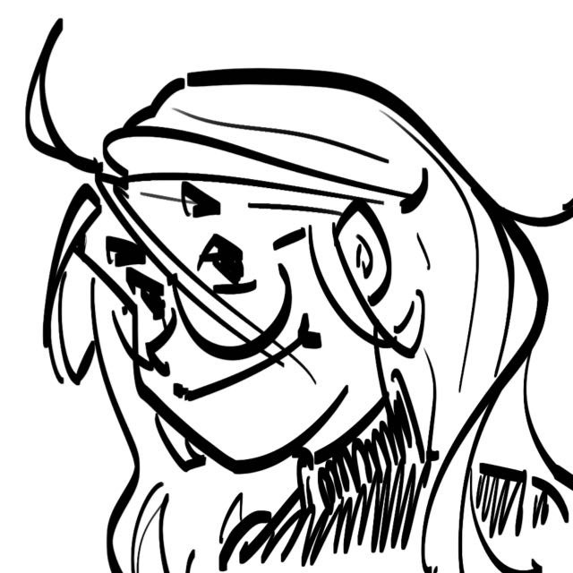

This individual is a human,
the sole extant species of the genus Homo.
It is unusually capable of the language
you are prone to daily.
In its words,
"Hi, I love birds but can't code.
This page is not about me.
Go read about the birds."
Who doesn't want shiny Pokémon? Who doesn't want to say "I have found
a rare bird"? But I won't do rarity justice if I just slapped on a few
stars and called it a day.
Rarity is not a unitary construct. Being in different locations gives
different impressions of rarity. Some birds are locally abundant but
globally less so. Others are not abundant throughout their extensive
range. Vagrants that attract hundreds of twitchers, might be garden
birds elsewhere. The sampling context also matters. Bird ringers
probably find more skulky species than mere visual observers. Heck,
even birding in a group rather than alone makes it more likely to spot
a bird! Many species are also more easily observed at particular times
of the year and times of the day.
It may be best to refrain from describing a species as rare. Instead,
rarity is relevant to events, i.e. it is rare to observe this
bird at this place at this time, which isn't very fun to talk about.
Thus, as of now, I will not do rarity ratings until I have thought of
a better way to break it down.
Apologies for images with subpar quality. I find it satisfying enough to just get a record shot, and do not bother with getting the perfect photo. Alas, I do realise the importance of learning proper camera techniques. Why am I taking crappy photos, if not having a skill issue? I shall try to get into a photography bootcamp.